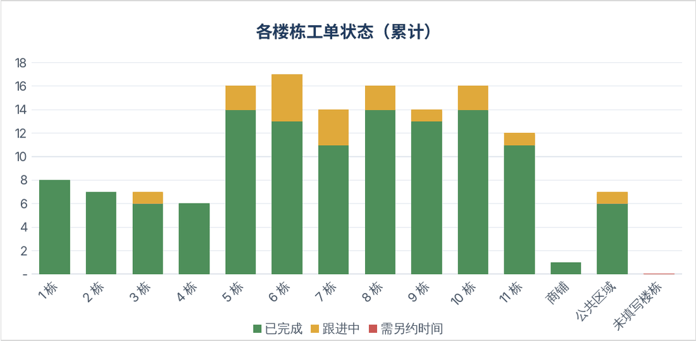
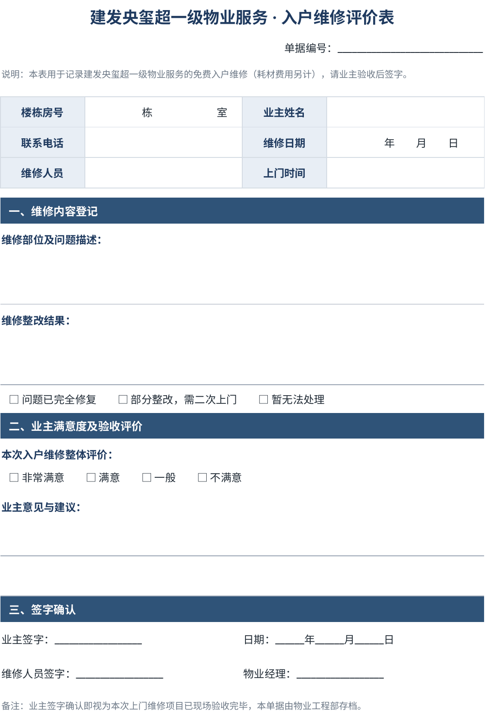

工程维修台账
与数据仪表盘
一套用 Excel 公式搭起来的维修工单系统。客服只管登记报修，单据编号、空闲师傅名单、完成率、满意度和师傅排行都由表格自动算出，不用宏，打开就能用。
- 形式
- Excel 工作簿，5 张工作表
- 数据周期
- 2026.7.30–8.7
- 工单
- 143 张：入户 121，公区 22
- 师傅
- 5 位
- 完成率
- 86.7%
- 好评率
- 99.1%（111 条评价）
示例文件已脱敏：师傅姓名、房号和备注里的住户信息都换成了虚构内容，公式和统计口径与原表一致。为了让日榜、周榜有数据，统计基准日固定在 2026 年 8 月 7 日，改成其他日期即可回看。
入户维修台账
每张工单一行，顶部是师傅调度看板。
- 工单处于“跟进中”的师傅自动列为工作中，其余的列为空闲可派单；把某位师傅设成“休息”，他就不会出现在空闲名单里。
- 单据编号按“楼栋-房号-月日”自动生成，同一户再次报修自动加 -02、-03 后缀。
- “该户累计”统计同一户报修了几次，2 次标黄，3 次及以上标红，反复报修的住户一眼能看出来。
- 上门排序、完成情况、维修评价都用下拉选择并按状态着色；漏填报修日期、跟进人重复选了同一位师傅，也会标色提醒。

公区维修台账
结构和入户台账一致，按楼栋加区域位置登记，比如东大门、车库出口、某个车位。两张台账共用同一批师傅，一位师傅只要在任一张台账里有跟进中的工单，就不会出现在空闲名单里。

总仪表盘
入户和公区两张台账的数据汇总到一页，只需改一个“统计基准日”，下面的数字全部跟着刷新，可以回看任意一天。
- 当日总览：报修量、完成率、评价分布，以及每位师傅当天的接单和在岗状态。
- 日榜、周榜、月榜，各分两列排名：一列按完成量，一列按满意度得分（非常满意 100 分、满意 80 分、一般 60 分、不满意 0 分，取平均）。
- 累计总览、按楼栋统计、按师傅统计、师傅×楼栋明细，另有两张图表。


单元查询
选查询范围和楼栋，填上房号，就能列出这个单元的全部维修记录，并汇总完成情况、好评率、首次和最近一次报修日期。房号留空就查整栋，适合每月盘点哪栋楼问题集中。

入户维修评价表
打印出来随工单上门，维修完成后由业主验收签字。表上的单据编号和台账一一对应，业主的评价登记回台账的“维修评价”一栏，再进入仪表盘统计。

